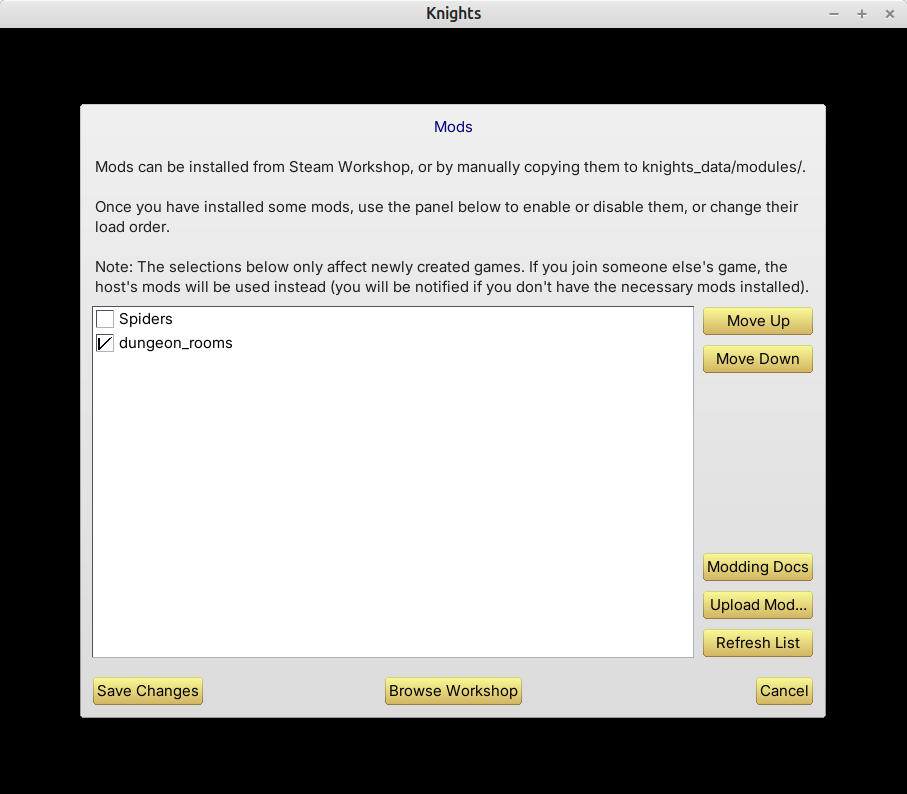

This screen allows you to enable and disable mods for the game.
Mods can be installed from Steam Workshop (for the Steam version of the game), or by manually copying them to "knights_data/modules" (all versions). See Knights Lua Documentation for more information about how mods can be created.
After installing a mod, you must enable it on this screen, before it will have any effect. Simply tick the box next to each mod to enable or disable it. You can also use "Move Up" and "Move Down" to rearrange mods in the load order. The load order is important if mods have dependencies: mods must load after the things that they depend on.
Note that mods enabled here only affect newly created games. If you are joining an existing game, the host's mods will be used instead. The required mods must be installed on your computer for this to work. (If the host is using Steam Workshop mods, but you are not subscribed to them, then you will be asked if you want to subscribe, at the point when you join the game. If, instead, the host is using locally installed mods in "knights_data/modules", you'll need to copy these manually to your computer, before you can join.)
Clicking "Refresh List" will re-scan the knights_data/modules folder, and (for Steam) recheck for any new Steam Workshop subscriptions. (This check might take a few moments; if it doesn't work, try clicking Refresh List again, or, if all else fails, exit the game and restart it.)
The "Browse Workshop" button (Steam only) will open Workshop in your Steam Overlay, allowing you to subscribe to new mods directly from within the game. If you do add any new subscriptions, use "Refresh List" to make them appear in the list, and don't forget to enable the new mod before trying to use it.
The "Upload Mod..." button (Steam only) allows you to upload one of your own mods to the Workshop. Further instructions for this can be found in the Knights Lua docs. Note that uploading a mod does not automatically subscribe to it. If you want to subscribe to a mod after uploading it, you can do so, but then you will have two copies of the mod in your list (the local copy, and the Workshop copy) – make sure to only enable one at a time.
Finally, the "Modding Docs" button simply opens the Knights Lua docs directly in your web browser.